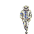

Michael Jackson
Michael Joseph Jackson (August 29, 1958 – June 25, 2009) was an American singer, songwriter, and dancer, known as the "King of Pop". He is regarded as one of the most significant cultural figures of the 20th century and is recognized as a global icon for his contributions to music, dance, and fashion. Michael Jackson was born on August 29, 1958, in Gary, Indiana. He began his musical career at a young age, performing with his brothers as part of the Jackson 5. The group achieved significant success and released several hit songs. In the 1980s, Michael Jackson embarked on a solo career and released several groundbreaking albums, including "Thriller," which became the best-selling album of all time. Other notable albums include "Off the Wall," "Bad," and "Dangerous. Michael Jackson's innovative music, mesmerizing dance moves, and iconic fashion sense had a profound influence on the music industry and popular culture. He inspired countless artists and left behind a lasting legacy.
My Michael Jackson Story
I first discovered Michael Jackson's music when I was 6 years old. My older sister had a copy of his album Thriller, and I was instantly hooked. I loved the catchy songs, the amazing dancing, and the overall sense of magic that Michael Jackson brought to his music. I would listen to Thriller over and over again, and I would even try to imitate Michael Jackson's dance moves. I was so inspired by him that I decided that I wanted to be a singer and dancer too. As I got older, I continued to be a fan of Michael Jackson's music. I loved his albums Bad, Dangerous, and HIStory. His songs always made me feel happy and inspired. Michael Jackson was more than just a singer and dancer to me. He was an icon, a role model, and a source of inspiration. He showed me that anything was possible if you followed your dreams. I'm so grateful that I had the opportunity to grow up listening to Michael Jackson's music. His music has had a profound impact on my life, and I'll never forget the joy and inspiration that he brought me.